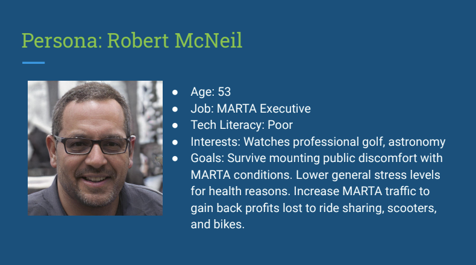
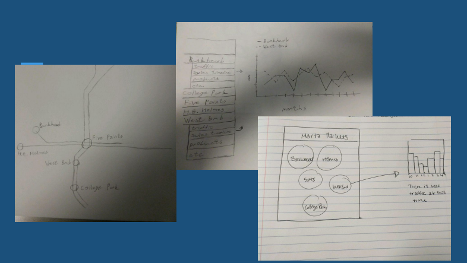
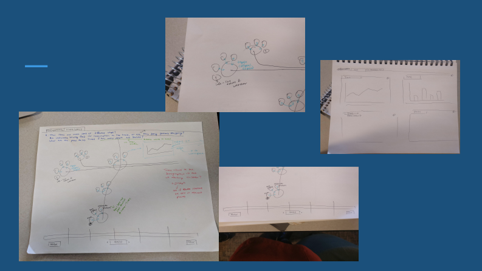
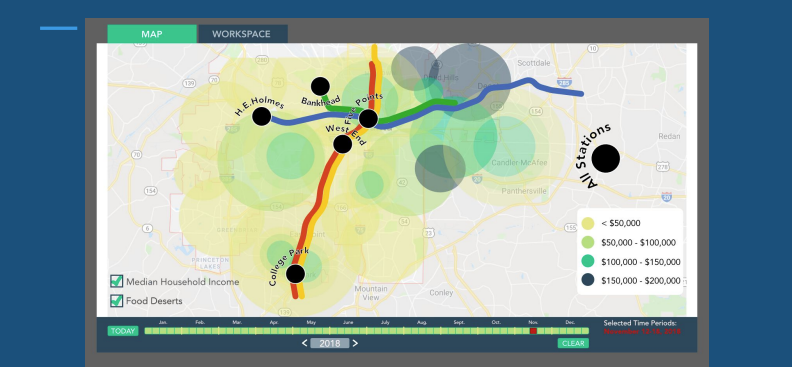

Community Farmers Markets - 2018
Defining the Problem
 Community Farmers Markets would like to harness their data to see trends across years and MARTA stations. They would also like to use data to make decisions about where and how to expand.
In order to aid them, data will need to be displayed in one easily-accessed location.
Community Farmers Markets would like to harness their data to see trends across years and MARTA stations. They would also like to use data to make decisions about where and how to expand.
In order to aid them, data will need to be displayed in one easily-accessed location.
Community Farmers Markets currently uses Square to accomplish non-cash transactions at their markets, Google Maps to obtain demographics data, and their own market data hosted in Tableau.
Relevant Personas

Sketch and Iterate


Test and Evaluate

Tasks
- View general sales data for a specific public transit point within a specific date range; Ideal click range: 5-9
- Move traffic data from one app view to another within a specific date range; Ideal click range: 5-9
- Delete data while utilizing locking/unlocking data selection; Ideal click range: 3-6
- Toggle income and food desert map view; Ideal click range: 2-4
Data Gathered
Demographic of testing group: 18-30-year-old adults; one participant above 50
- View general sales data for a specific public transit point within a specific date range; Actual click range: 5-25
- Move traffic data from one app view to another within a specific date range; Actual click range: 5-12
- Delete data while utilizing locking/unlocking data selection; Actual click range: 3-6
- Toggle income and food desert map view; Actual click range: 2-4
Feedback
- Have a key for overlays
- Change overlays to color-code for required situation
- Create an alert for migrating a graph into a workspace for error-handling
- Red text is difficult to read, consider removal
- The timeline of data is important, consider making it larger/more of a focal point
- Divisions of timeline sections are confusing